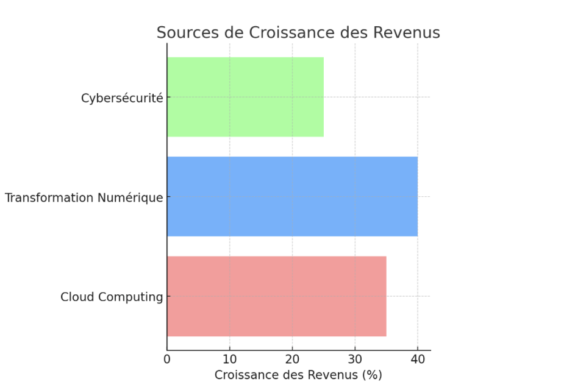
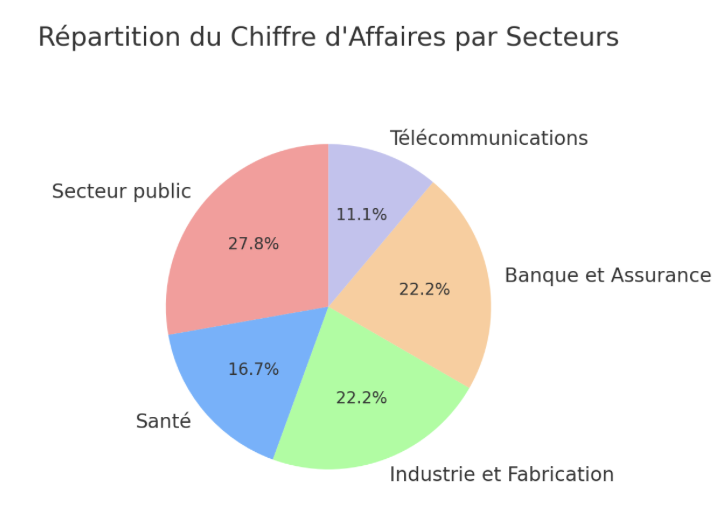

Building the digital future together
Atos is an international company specializing in information technology, offering solutions in strategic sectors. It generates substantial revenues by leveraging multiple market segments, ranging from cloud services to cybersecurity, big data, and digital transformation.
All the information you will find on this page is verifiable at this address.
Atos adopts an economic strategy focused on diversifying its services and securing recurring revenues through multi-year contracts. As a leader in information technology, Atos offers a wide range of solutions, from cloud computing to cybersecurity, including artificial intelligence and big data. This diversification enables the company to address a broad portfolio of clients from key sectors such as healthcare, the public sector, industry, and telecommunications. Atos' economic model is based on creating recurring revenues through long-term service contracts, often spanning several years, especially in critical areas like IT infrastructure management and cybersecurity. These contracts allow Atos to ensure stable cash flows, providing significant visibility into its future revenues. By outsourcing IT infrastructure management and offering continuous services like private cloud or managed security services, Atos ensures customer loyalty and sustained profitability.
Atos' revenue growth is driven by several key factors:
The cloud is one of the main sources of revenue growth for Atos. Companies continue to migrate to cloud infrastructures to benefit from greater flexibility and reduce operational costs. Atos offers tailored solutions, whether private, hybrid, or public cloud, in partnership with leaders like AWS, Google Cloud, and Microsoft Azure.
The rise of digital technologies such as artificial intelligence, big data, and the Internet of Things (IoT) has accelerated the digital transformation of companies. Atos positions itself as a strategic partner to help its clients automate and optimize their business processes, especially in sectors such as manufacturing, energy, and financial services. This digital transformation, driven by AI and big data, creates new growth opportunities for the company.
With the increase in cyber threats, the demand for cybersecurity services continues to grow. Atos, with its Managed Security Services (MSS) and data protection services, benefits from increased demand to secure its clients' critical infrastructures, thus strengthening its revenues in this strategic area.
Atos' profitability is a key element of its economic strategy, with varying profit margins depending on the business segments.
The most profitable segments for Atos mainly include cybersecurity and cloud computing. These sectors benefit from high demand and offer higher margins compared to traditional services.
Cybersecurity, in particular, represents a lucrative opportunity. With the rise of cyber threats, companies are increasingly investing in security solutions. Atos, through its Managed Security Services (MSS), positions itself as a leader in this market, ensuring high margins.
Cloud computing is also a driver of profitability. Atos offers tailored cloud solutions that enable companies to reduce costs while improving agility. Private, hybrid, and public cloud offerings contribute to sustained revenue growth and attractive margins.
Compared to other services such as consulting and infrastructure services, the cloud and cybersecurity segments display significantly higher profit margins, thereby consolidating Atos' market position.
Atos invests heavily in research and development (R&D) to remain at the forefront of technological innovation. By focusing on strategic areas such as artificial intelligence, advanced cybersecurity, and the Internet of Things, Atos ensures it can meet its clients' future needs while positioning itself as a key player in disruptive technologies.
Furthermore, Atos relies on a strategy of targeted acquisitions to strengthen its position in high-growth segments. These acquisitions allow it to acquire new technological skills, expand its service offerings, and access new markets. These investments are crucial to maintaining sustainable and diversified growth while consolidating its leadership in the information technology sector.
Atos' long-term goal is to ensure organic growth while continuing to innovate for its clients, by investing in cutting-edge technological solutions that address the growing digital challenges of tomorrow.
Atos generates its revenues from several diversified sectors, ensuring balanced risk distribution and economic stability. Here's how the company distributes its revenues:
